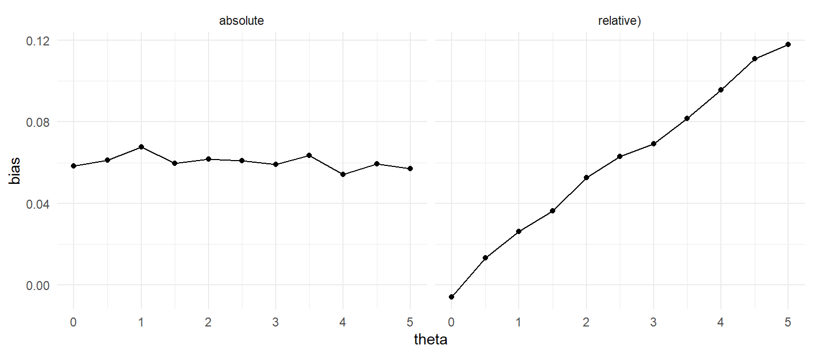

Chapter 7 Performance criteria
So far, we’ve looked at the structure of simulation studies and seen how to write functions that generate data according to a specified model (and parameters) and functions that implement estimation procedures on simulated data. Put those two together and repeat a bunch of times, and we’ll have a lot of estimates and perhaps also their estimated standard errors and/or confidence intervals. And if the purpose of the simulation is to compare multiple estimation procedures, then we’ll have a set of estimates (SEs, CIs, etc.) for each of the procedures. The question is then: how do we assess the performance of these estimators?
In this chapter, we’ll look at a variety of performance criteria that are commonly used to compare the relative performance of multiple estimators or measure how well an estimator works. These performance criteria are all assessments of how the estimator behaves if you repeat the experimental process an infinite number of times. In statistical terms, these criteria are summaries of the true sampling distribution of the estimator, given a specified data generating process.
Although we can’t observe this sampling distribution directly (and it can only rarely be worked out in full mathematical detail), we can sample from it. In particular, the set of estimates generated from a simulation constitute a (typically large) sample from the sampling distribution of an estimator. (Say that six times fast!) We then use that sample to estimate the performance criteria of interest. For example, we want to know what percent of the time we would reject the null hypothesis; we estimate this by seeing how often we do in 1000 trials. Now, because we have only a sample of trials rather than the full distribution, our estimates are estimates. In other words, they can be wrong, just due to random chance. We can describe how wrong with the Monte Carlo standard error (MCSE); it is the standard error in our estimation of performance due to the simulation only having a finite number of trials. Just as with statistical uncertainty when analyzing data, we can estimate our MCSE and even generate confidence intervals for our performance estimates with them. And then, if we can computationally do it, we would use a large enough number of replications so that the MCSE is small enough that our performance estimates have our desired level of precision.
7.1 Inference vs. Estimation
A core purpose of simulation is to compare different estimators to each other under a variety of circumstances. These sorts of simulations are simulations to examine and compare the properties of different inferential methods or estimators. For example, one might want to know how much better adjusting for covariates is, if at all, when analyzing a randomized experiment.
Such an analysis might involve two general activities: inference and estimation. Inference is when we do hypothesis testing, asking whether there is evidence for some sort of effect, or asking whether there is evidence that some coefficient is greater than or less than some specified value. So in our circumstance, we might specify interest in the average treatment effect, which we will call \(\tau\). Inference would be testing the null of \(H_0: \tau = 0\).
Estimation is when we estimate the actual value of \(\tau\). There might be different ways of obtaining some estimate, and we want to know which is best. Hand-in-hand with estimation is estimating uncertainty, i.e. assessing how close we believe our estimate to be to the truth. Here we would examine how well, for example, different estimators of the standard error perform.
For our hypothetical scenario, we might consider using either of two estimators of interest, the simple difference in means, \[ \hat{\tau}_{sd} = \overline{Y}_1 - \overline{Y}_0, \] where \(\overline{Y}_z\) is the average outcome of those units given treatment \(z\), versus the coefficient \(\widehat{\tau}_{ols}\) from fitting the ordinary regression: \[ Y = a + b X + \tau Z + \epsilon .\]
Call these two Estimator A and Estimator B. For \(\hat{\tau}_{sd}\) we would use Neyman’s formula for estimating the standard error: \[ \widehat{SE}(\tau_{sd} ) = \frac{ \hat{\sigma}_1^2 }{ n_1 } + \frac{ \hat{\sigma}_0^2}{n_0} . \] For \(\widehat{\tau}_{ols}\) we might use, say, the usual standard errors we get from generic statistics software. Finally, for inference, we would perhaps use the \(p\)-value from a Wald test for our simple difference in means and the \(p\)-values we get from the regression command.
The question would then be whether our two estimation strategies were different, whether one was superior to the other, and what salient differences were. In particular, for our simple example, we might want to know if there is evidence that there is a treatment effect at all. This would be inference. We might also want to know what the average treatment effect is. This is estimation. These two goals are clearly highly related – if we have a good estimate of the treatment effect and it is not zero, then we are willing to say that there is a treatment effect – but depending on the framing, the way you would set up a simulation to investigate the behavior of your estimators will be different.
For inference, we first might ask whether both our methods are valid, i.e., ask whether these methods work correctly when we test for a treatment effect when there is none. In particular, we might wonder whether adjusting for a covariate could open the door to inference problems if there was no actual treatment effect, but where the residuals had some non-normal distribution. These sorts of questions are questions of validity.
Also for inference, we might ask which method is better for detecting an effect when there is one. Here, we want to know how these estimators perform in circumstances with a non-zero average treatment effect. Do they reject the null often, or rarely? How much does including covariates increase our chances of rejection? These are questions about power.
For estimation, we can be concerned with two things: bias and variance. An estimator is biased if it would generally give estimates that are higher (or lower) than the parameter being estimated. The variance of an estimator is how much the estimator varies from trial to trial. The variance is the true standard error, squared.
We might also be concerned with how well we can estimate the uncertainty of our estimators (i.e., estimate our standard error). For example, we might have an estimator that works very well, but we have no ability to estimate how well in any given circumstance.
7.2 Evaluation of Estimation Methods
Estimation has two major components, the point estimator and the uncertainty estimator. We evaluate both the properties of the point estimator and the performance of the properties of the point estimator. For example, consider a specific estimate \(\hat{\tau}\) of our average treatment effect. We first wish to know the actual bias and true standard error (\(SE\)) of \(\hat{\tau}\). These are its actual properties. However, for each estimated \(\hat{\tau}\), we also estimate \(\widehat{SE}\), as our estimated measure of how precise our estimate is. We need to understand the properties of \(\widehat{SE}\) as well.
7.2.1 Assessing actual properties
These are simple. For a given scenario, we repeatedly generate data and estimate effects. We then take the mean and standard deviation of these repeated trials to estimate actual properties via Monte Carlo. Given sufficient simulation trials, we can obtain arbitrarily accurate measures.
For example, we can ask what the variance (or standard error) of our estimator is. We can ask if our estimator is biased. We can ask what the overall \(RMSE\) (root mean squared error) of our estimator is.
7.2.2 Assessing estimated properties
Let our estimator be \(\hat{\tau}\). In our simulation we can know its actual properties, but if we were to use this estimator in practice we would have to also estimate its associated standard error, and generate confidence intervals and so forth. To understand if this works, we need to evaluate not only the behavior of the estimator itself, but the behavior of these associated things.
7.3 Assessing a point estimator
Consider an estimator \(T\) for a parameter \(\theta\). A simulation study generates a (typically large) sample of estimates \(T_1,...,T_R\), all of the target \(\theta\).
The most common measures of an estimator are the bias, variance, and mean squared error. We can first assess whether our estimator is biased, by comparing the mean of our \(R\) estimates \[ \bar{T} = \frac{1}{R}\sum_{r=1}^R T_r \] to \(\theta\). The bias of our estimator is \(bias = \bar{T} - \theta\).
We can also ask how variable our estimator is, by assessing the size of the variance of our \(R\) estimates \[\displaystyle{S_T^2 = \frac{1}{R - 1}\sum_{r=1}^R \left(T_r - \bar{T}\right)^2} . \]
Finally, the Mean Square Error (MSE) is a combination of the above two measures: \[ MSE = \frac{1}{R} \sum_{r = 1}^R \left( T_r - \theta\right)^2 . \]
An important relationship connecting these three measures is \[ MSE = bias^2 + variance .\] Less commonly used criteria include the median bias and the median absolute deviation of \(T\), where we use the median \(\tilde{T}\) of our estimates rather than the mean \(\bar{T}\).
All these criteria are listed in the table below.
| Criterion | Definition | Estimate |
|---|---|---|
| Bias | \(\text{E}(T) - \theta\) | \(\bar{T} - \theta\) |
| Median bias | \(\text{M}(T) - \theta\) | \(\tilde{T} - \theta\) |
| Variance | \(\text{E}\left[\left(T - \text{E}(T)\right)^2\right]\) | \(S_T^2\) |
| MSE | \(\text{E}\left[\left(T - \theta\right)^2\right]\) | \(\left(\bar{T} - \theta\right)^2 + S_T^2\) |
| MAD | \(\text{M}\left[\left|T - \theta\right|\right]\) | \(\left[\left|T - \theta\right|\right]_{R/2}\) |
- Bias and median bias are measures of whether the estimator is systematically higher or lower than the target parameter.
- Variance is a measure of the precision of the estimator—that is, how far it deviates from its average. We might look at the square root of this, to assess the precision in the units of the original measure.
- Mean-squared error is a measure of overall accuracy, i.e. is a measure how far we typically are from the truth. We more frequently use the root mean-squared error, or RMSE, which is just the square root of the MSE.
- The median absolute deviation is another measure of overall accuracy that is less sensitive to an occasional bad mistake. In general the RMSE can be driven up by a single bad egg. The MAD is less sensitive to this.
For absolute assessments of performance, an estimator with low bias, low variance, and thus low RMSE is desired. For comparisons of relative performance, an estimator with lower RMSE is usually preferable to an estimator with higher RMSE; if two estimators have comparable RMSE, then the estimator with lower bias (or median bias) would usually be preferable.
It is important to recognize that the above performance measures depend on the scale of the parameter. For example, if our estimators are measuring a treatment impact in dollars, then our bias would be in dollars. Our variance and MSE would be in dollars squared, so we might take their square roots to put them back on the dollars scale.
Usually in a simulation, the scale of the outcome is irrelevant as we are comparing one estimator to the other. To ease interpretation, we might want to assess estimators relative to the baseline variation. To achieve this, we can generate data so the outcome has unit variance (i.e., we generate standardized data). Then the bias, median bias, and root mean-squared error would all be in standard deviation units.
Furthermore, changing the scale of a parameter can lead to nonlinear changes in the performance measures. For instance, suppose that \(\theta\) is a measure of the proportion of time that a behavior occurs. A natural way to transform this parameter would be to put it on the log-odds (logit) scale. However, because of the nonlinear aspect of the logit, \[\text{Bias}\left[\text{logit}(T)\right] \neq \text{logit}\left(\text{Bias}[T]\right), \qquad \text{MSE}\left[\text{logit}(T)\right] \neq \text{logit}\left(\text{MSE}[T]\right),\] and so on. This is fine, but one should be aware that this can happen and do it on purpose.
7.4 Assessing a standard error estimator
Statistics is perhaps more about assessing how good an estimate is than making an estimate in the first place. This translates to simulation studies: we generally not only want to know whether our estimator is doing a good job, but we often want to know whether we are able to get a good standard error for that estimator as well.
We first would compare the expected value of \(\widehat{SE}\) to the actual \(SE\). This tells us whether our uncertainty estimates are biased. We could also examine the standard deviation of \(\widehat{SE}\), which tells us whether our estimates of uncertainty are relatively stable (especially compared to other methods). We finally could examine whether there is correlation between \(\widehat{SE}\) and actual error (e.g., \(\left|T - \theta \right|\)). Good estimates of uncertainty should predict error in a given context (especially if calculating in conditional estimates). See .
For the first assessment, we usually assess the quality of a standard error estimator with a relative performance criteria, rather than an absolute one as we saw above. For an example, suppose that in our simulation we are examining the performance of a point-estimator \(T\) for a parameter \(\theta\) along with an estimator \(\widehat{SE}\) for the standard error of \(T\). In this case, we likely do not know the true standard error of \(T\), for our simulation context, prior to the simulation. However, we can use the variance of \(T\) across the replications (\(S_T^2\)) to directly estimate the true sampling variance \(\text{Var}(T) = SE^2(T)\). The relative bias of \(\widehat{SE}^2\) would then be estimated by \(RB = \bar{V} / S_T^2\), where \(\bar{V}\) is the average of \(\widehat{SE}^2\) across simulation runs. Note that a value of 1 for relative bias corresponds to exact unbiasedness. The relative bias measure is a measure of proportionate under- or over-estimation. For example, a relative bias of 1.12 would mean the standard error was, on average, 12% too large.
For parameters such as these, that measure scale, or that are always strictly positive, it often makes sense to quantify performance using such relative criteria. Relative criteria are very similar to the absolutre criteria discussed for point estimators, but are defined as proportions of the target parameter, rather than as differences. Relative criteria are also often used when, for example, estimating quantities such as standard deviations. The table below defines several relative performance criteria.
| Criterion | Definition | Estimate |
|---|---|---|
| Relative bias | \(\text{E}(T) / \theta\) | \(\bar{T} / \theta\) |
| Relative median bias | \(\text{M}(T) / \theta\) | \(\tilde{T} / \theta\) |
| Relative MSE | \(\text{E}\left[\left(T - \theta\right)^2\right] / \theta^2\) | \(\frac{\left(\bar{T} - \theta\right)^2 + S_T^2}{\theta^2}\) |
7.4.1 Why not assess \(widehat{SE}\) directly?
We typically see assessment of \(\widehat{SE}^2\), not \(\widehat{SE}\). In other words, we typically work with assessing whether the variance estimator is unbiased, etc., rather than the standard error estimator. This comes out of a few reasons. First, in practice, so-called unbiased standard errors usually are not in fact actually unbiased. For linear regression, for example, the classic standard error estimator is an unbiased variance estimator, meaning that we have a small amount of bias due to the square-rooting as:
\[ E[ \sqrt{ V } ] \neq \sqrt{ E[ V ] } . \]
Variance is also the component that gives us the classic bias-variance breakdown of $ MSE = Variance + Bias^2$, so if we are trying to assign whether an overall MSE is due to instability or systematic bias, operating in this squared space may be preferable.
That being said, to put things in terms of performance criteria humans understand it is usually nicer to put final evaluation metrics back into standard error units. For example, saying there is a 10% reduction in the standard error is more meaningful (even if less impressive sounding) than saying there is a 19% reduction in the variance.
7.5 Assessing a hypothesis testing procedure
When hypothesis tests are used in practice, the researcher specifies a null (e.g., no treatment effect), collects data, and generates a \(p\)-value which is a measure of how extreme the observed data are from what we would expect to naturally occur, if the null were true. When we assess a method for hypothesis testing, we are therefore typically concerned with two aspects: validity and power.
7.5.1 Validity
Validity revolves around whether we erroneously reject the null when it is in fact true more than we should. Put another way, we say an inference method is valid if it has no more than an \(\alpha\) chance of rejecting the null when we are testing at the \(\alpha\) level. This means if we used this method 1000 times, where the null was true for all of those 1000 times, we should not see more than about \(1000 \alpha\) rejections (so, 50, if we were using the classic \(\alpha = 0.05\) rule).
To do this we would specify a data generating process where the null is in fact true. We then, for a series of such data sets with a true null, conduct our inferential processes on the data, record the \(p\)-value, and score whether we reject the null hypothesis or not.
We might then test our methods by exploring more extreme data generation processes, where the null is true but other aspects of the data (such as outliers or heavy skew) make estimation difficult. This allows us to understand if our methods are robust to strange data patterns in finite sample contexts.
The key concept for validity is that the date we generate, no matter how we do it, is data with a true null. We then check to see if we reject the null more than we should.
7.5.2 Power
Power is, loosely speaking, how often we notice an effect when one is there. This is a much more nebulous concept, because some effects are clearly easier to notice than others. Regardless of the estimator used, if the effect is large enough, we would notice. If we are comparing estimators to each other, this is less of a concern, because we are typically interested an relative performance. That being said, in order to generate data for a power evaluation, we have to generate data where there is something to detect. In other words, we need to commit to what the alternative is, and this can be a tricky business.
Typically, it is best to think of power as a function of sample size or effect size. Therefore, we will typically examine a sequence of scenarios with steadily increasing sample size or effect size, estimating the power for each scenario in the sequence. We then, for each sample in our series, estimate the power by the same process as for Validity, above. For each series we can then plot power curves, as we saw with some of our earlier vignettes.
When assessing validity, we want rejection rates to be low, below \(\alpha\), and when assessing power we want them to be as high as possible. But the simulation process itself, other than the data generating process, is exactly the same.
To put some technical terms to this framing, for both validity and power assessment the main performance criterion is the rejection rate of the hypothesis test. When the data are simulated from a model in which the null hypothesis being tested is true, then the rejection rate is equivalent to the Type-I error rate of the test. When the data are simulated from a model in which the null hypothesis is false, then the rejection rate is equivalent to the power of the test (for given, non-null parameter values). Ideally, a testing procedure should have actual Type-I error equal to the nominal level \(\alpha\) (this is the definition of validity), but such exact tests are rare.
There are some different perspectives on how close the actual Type-I error rate should be in order to qualify as suitable for use in practice. Following a strict statistical definition, a hypothesis testing procedure is said to be level-\(\alpha\) if its actual Type-I error rate is always less than or equal to \(\alpha\). Among a set of level-\(\alpha\) tests, the test with highest power would be preferred. If looking only at null rejection rates, then the test with Type-I error closest to \(\alpha\) would usually be preferred. A less stringent criteria is sometimes used instead, where type I error would be considered acceptable if it is within 50% of the desired \(\alpha\).
Often, it is of interest to evaluate the performance of the test at several different \(\alpha\) levels. A convenient way to calculate a set of different rejection rates is to record the simulated \(p\)-values and then calculate from those. To illustrate, suppose that \(P_r\) is the \(p\)-value from simulation replication \(k\), for \(k = 1,...,R\). Then the rejection rate for a level-\(\alpha\) test is defined as \(\rho_\alpha = \text{Pr}\left(P_r < \alpha\right)\) and estimated as \[r_\alpha = \frac{1}{R} \sum_{r=1}^R I(P_r < \alpha).\]
7.6 Assessing confidence intervals
Some estimation procedures result in confidence intervals (or sets) which are ranges of values that should contain the true answer with some specified degree of confidence. For example, a normal-based confidence interval is a combination of an estimator and it’s estimated uncertainty.
We typically score a confidence interval along two dimensions, coverage rate and the average length. To calculate coverage rate, we score whether each interval “captured” the true parameter. A success is if the true parameter is inside the interval. To calculate average length, we record each confidence interval’s length, and then average across simulation runs. We say an estimator has good properties if it has good coverage, i.e. it is capturing the true value at least \(1-\alpha\) of the time, and if it is generally short (i.e., the average length of the interval is less than the average length for other methods).
Note that confidence interval coverage is simultaneously evaluating the estimators in terms of how well they estimate (precision) and their inferential properties. We have combined inference and estimation here.
Suppose that the confidence intervals are for the target parameter \(\theta\) and have coverage level \(\beta\). Let \(A_r\) and \(B_r\) denote the lower and upper end-points of the confidence interval from simulation replication \(k\), and let \(W_r = B_r - A_r\), all for \(k = 1,...,R\). The coverage rate and average length criteria are then as defined in the table below.
| Criterion | Definition | Estimate |
|---|---|---|
| Coverage | \(\omega_\beta = \text{Pr}(A \leq \theta \leq B)\) | \(\frac{1}{R}\sum_{r=1}^R I(A_r \leq \theta \leq B_r)\) |
| Expected length | \(\text{E}(W) = \text{E}(B - A)\) | \(\bar{W} = \bar{B} - \bar{A}\) |
Just as with hypothesis testing, a strict statistical interpretation would deem a hypothesis testing procedure acceptable if it has actual coverage rate greater than or equal to \(\beta\). If multiple tests satisfy this criterion, then the test with the lowest expected length would be preferable. Some analysts prefer to look at lower and upper coverage separately, where lower coverage is \(\text{Pr}(A \leq \theta)\) and upper coverage is \(\text{Pr}(\theta \leq B)\).
7.7 Uncertainty in our performance estimates (the MCSE)
Our performance criteria are defined as average performance across an infinite number of trials. Of course, in our simulations we only run a finite number, and estimate the performance criteria with the sample of trials we generate. For example, if we are assessing coverage across 100 trials, we calculate what fraction rejected the null for that 100. But due to random chance, we might see a higher, or lower proportion rejected just due to random chance than what we would see if we ran the simulation forever.
To account for this estimation uncertainty we would want to calculate associated uncertainty estimates to go with our point estimates of performance. We want to, in other words, treat our simulation results as a dataset in its own right.
In this section we discuss how to calculate standard errors for the various performance critera given above. We call these Monte Carlo Simulation Errors, or MCSEs. For many performance critera, calculating a MCSE is quite straightforward: we have a nice, independent and identically distributed set of measurements, and the statastical inference is straightforward. For some other performance criteria we have to be a bit more clever.
First, we list MCSE expressions for many of our straightforward performance measures on the table below. In reading the table, recall that, for an estimator \(T\), we have \(S_T^2\) being the variance of \(T\) across our simulation runs. We also have - Sample skewness (standardized): \(\displaystyle{g_T = \frac{1}{R S_T^3}\sum_{r=1}^R \left(T_r - \bar{T}\right)^3}\) - Sample kurtosis (standardized): \(\displaystyle{k_T = \frac{1}{R S_T^4} \sum_{r=1}^R \left(T_r - \bar{T}\right)^4}\)
| Criterion | MCSE |
|---|---|
| Bias | \(\sqrt{S_T^2/ R}\) |
| Median bias | - |
| Variance | \(\displaystyle{S_T^2 \sqrt{\frac{k_T - 1}{R}}}\) |
| MSE | \(\displaystyle{\sqrt{\frac{1}{R}\left[S_T^4 (k_T - 1) + 4 S_T^3 g_T\left(\bar{T} - \theta\right) + 4 S_T^2 \left(\bar{T} - \theta\right)^2\right]}}\) |
| MAD | - |
| —————- | ——– |
| Relative bias | \(\sqrt{S_T^2 / \left(R\theta^2\right)}\) |
| Relative median bias | - |
| Relative MSE | \(\displaystyle{\sqrt{\frac{1}{R\theta^2}\left[S_T^4 (k_T - 1) + 4 S_T^3 g_T\left(\bar{T} - \theta\right) + 4 S_T^2 \left(\bar{T} - \theta\right)^2\right]}}\) |
| —————- | ——– |
| Power & Validity | \(\sqrt{ r_\alpha \left(1 - r_\alpha\right) / R}\) |
| Coverage | \(\sqrt{\omega_\beta \left(1 - \omega_\beta\right) / R}\) |
| Expected length | \(\sqrt{S_W^2 / R}\) |
7.7.1 MCSE for variance estimators
Estimating the MCSE of the relative bias or relative MSE of a (squared) standard error estimator is complicated by the appearance of a sample quantity, \(S_T^2\), in the denominator of the ratio. This renders the formula above unusable, technically speaking.
To properly assess the overall MCSE, we need to take the uncertainty of our denominator into account. One way to do so is to use the jackknife technique. Let \(\bar{V}_{(j)}\) and \(S_{T(j)}^2\) be the average squared standard error estimate and the true variance estimate calculated from the set of replicates that excludes replicate \(j\), for \(j = 1,...,R\). The relative bias estimate, excluding replicate \(j\) would then be \(\bar{V}_{(j)} / S_{T(j)}^2\). Calculating all \(R\) versions of this relative bias estimate and taking the variance yields the jackknife variance estimator:
\[ MCSE\left(\widehat{SE}^2\right) = \frac{1}{R} \sum_{j=1}^R \left(\frac{\bar{V}_{(j)}}{S_{T(j)}^2} - \frac{\bar{V}}{S_T^2}\right)^2. \]
This would be quite time-consuming to compute if we did it by brute force. However, with a few algebra tricks we can find a much quicker way. The tricks come from observing that
\[ \begin{aligned} \bar{V}_{(j)} &= \frac{1}{R - 1}\left(R \bar{V} - V_j\right) \\ S_{T(j)}^2 &= \frac{1}{R - 2} \left[(R - 1) S_T^2 - \frac{R}{R - 1}\left(T_j - \bar{T}\right)^2\right] \end{aligned} \] These formulas can be used to avoid re-computing the mean and sample variance from every subsample. Instead, you calculate the overall mean and overall variance, and then do a small adjustment with each jackknife iteration. You can even implement this with vector processing in R!
7.7.2 The simhelpers package and MCSEs
The simhelper package is designed to calculate MCSEs (and the performance metrics themselves) for you.
It is easy to use: here is an example on the Welch dataset that the package provides:
library( simhelpers )
welch <- welch_res %>%
filter( method == "t-test" ) %>%
dplyr::select( -method, -seed, -iterations )
welch## # A tibble: 8,000 × 8
## n1 n2 mean_diff est var p_val lower_bound upper_bound
## <dbl> <dbl> <dbl> <dbl> <dbl> <dbl> <dbl> <dbl>
## 1 50 50 0 0.0258 0.0954 0.934 -0.587 0.639
## 2 50 50 0 0.00516 0.0848 0.986 -0.573 0.583
## 3 50 50 0 -0.0798 0.0818 0.781 -0.647 0.488
## 4 50 50 0 -0.0589 0.102 0.854 -0.692 0.574
## 5 50 50 0 0.0251 0.118 0.942 -0.658 0.708
## 6 50 50 0 -0.115 0.106 0.725 -0.761 0.531
## 7 50 50 0 0.157 0.115 0.645 -0.517 0.831
## 8 50 50 0 -0.213 0.121 0.543 -0.903 0.478
## 9 50 50 0 0.509 0.117 0.139 -0.169 1.19
## 10 50 50 0 -0.354 0.0774 0.206 -0.906 0.198
## # … with 7,990 more rows7.8 Absolute vs. relative performance measures
Depending on the model and estimation procedures being examined, a range of different criteria might be used to assess estimator performance. In particular, one might be deciding between using an absolute vs. relative performance measure. How does one pick?
In the above, we presented the absolute criteria for the point estimators and relative criteria for standard error estimators. But it turns out that this is not a fixed rule.
In general, we do not expect, for the performance (bias, variance, and MSE) of a point estimate such as a mean estimate to depend on its magnitude. In other words, if we are estimating some mean \(\theta\), and we generate data where \(\theta = 100\) vs \(\theta = 1000\) (or any arbitrary number), we would not generally expect that to change the magnitude of its bias, variance, or MSE. On the other hand, these different \(\theta\)s will have a large impact on the relative bias and relative MSE. (Want smaller relative bias? Just add a million to the parameter!) For these sorts of “location parameters” we generally use absolute measures of performance.
That being said, a more principled approach for determining whether to use absolute or relative performance criteria depends on assessing performance for multiple values of the parameter. In many simulation studies, replications are generated and performance criteria are calculated for several different values of a parameter, say \(\theta = \theta_1,...,\theta_p\). Let’s focus on bias for now, and say that we’ve estimated (from a large number of replications) the bias at each parameter value.

If the absolute bias is roughly the same for all values of \(\theta\) (as in the plot on the left), then it makes sense to report absolute bias as the summary performance criterion. On the other hand, if the bias grows roughly in proportion to \(\theta\) (as in the plot on the right), then relative bias is a better summary criterion.
More broadly, one can calculate performance relative to some baseline. For example, if one of the estimators is the “generic method”, we could calculate ratios of the RMSE of our estimators to the baseline RMSE. This can provide a way of standardizing across simulation scenarios where the overall scale of the RMSE changes radically. While a powerful tool, it is not without risks: if you scale relative to something, then higher or lower ratios can either be due to the primary method of interest (the numerator) or behavior of the reference method in the denominator. These relative ratios can end up being confusing to interpret due to this tension.
7.9 Exercises: Simulating Cronbach’s alpha
Cronbach’s \(\alpha\) coefficient is commonly reported as a measure of the internal consistency among a set of test items. Consider a set of \(p\) test items with population variance-covariance matrix \(\boldsymbol\Phi = \left[\phi_{ij}\right]_{i,j=1}^p\). This population variance-covariance matrix describes how our \(p\) test items co-vary.
Cronback’s \(\alpha\) is, under this model, defined as \[ \alpha = \frac{p}{p - 1}\left(1 - \frac{\sum_{i=1}^p \phi_{ii}}{\sum_{i=1}^p \sum_{j=1}^p \phi_{ij}}\right). \]
Given a sample of size \(n\), the usual estimate of \(\alpha\) is obtained by replacing the population variances and covariances with corresponding sample estimates. Letting \(s_{ij}\) denote the sample covariance of items \(i\) and \(j\)
\[ A = \frac{p}{p - 1}\left(1 - \frac{\sum_{i=1}^p s_{ii}}{\sum_{i=1}^p \sum_{j=1}^p s_{ij}}\right). \]
If we assume that the items follow a multivariate normal distribution, then \(A\) corresponds to the maximum likelihood estimator of \(\alpha\).
In these exercises, we will examine the properties of this estimator when the set of \(P\) items is not multi-variate normal, but rather follows a multivariate \(t\) distribution with \(v\) degrees of freedom. For simplicity, we shall assume that the items have common variance and have a compound symmetric covariance matrix, such that \(\phi_{11} = \phi_{22} = \cdots = \phi_{pp} = \phi\) and \(\phi_{ij} = \rho \phi\). In this case we can simplify our expression for \(\alpha\) to
\[ \alpha = \frac{p \rho}{1 + \rho (p - 1)}. \]
7.9.1 The data-generating function
The following function generates a sample of \(n\) observations of \(p\) items from a multivariate t distribution with a compound symmetric covariance matrix, intra-class correlation \(\rho\), and \(v\) degrees of freedom:
library(mvtnorm)
r_mvt_items <- function(n, p, icc, df) {
V_mat <- icc + diag(1 - icc, nrow = p)
X <- rmvt(n = n, sigma = V_mat, df = df)
colnames(X) <- LETTERS[1:p]
X
}
small_sample <- r_mvt_items(n = 8, p = 3, icc = 0.7, df = 5)
small_sample## A B C
## [1,] 0.09382233 -0.3954138 -0.07444013
## [2,] -0.26192949 -0.4419227 -0.39160382
## [3,] 0.39158338 0.9757591 -0.53170400
## [4,] -0.05918679 -1.5391954 -0.79945929
## [5,] -1.84261034 0.1107519 -1.08034605
## [6,] 0.39922138 0.3197069 0.59206764
## [7,] -0.19669418 -0.6172658 -1.43238613
## [8,] -0.75393141 -0.8665165 0.03773137To check that the function is indeed simulating data following the intended distribution, let’s generate a very large sample of items. We can then verify that the correlation matrix of the items is compound-symmetric and that the marginal distributions of the items follow t distributions with specified degrees of freedom.
big_sample <- r_mvt_items(n = 100000, p = 4, icc = 0.7, df = 5)
round(cor(big_sample), 3) # looks good## A B C D
## A 1.000 0.701 0.702 0.702
## B 0.701 1.000 0.700 0.703
## C 0.702 0.700 1.000 0.700
## D 0.702 0.703 0.700 1.000qqplot(qt(ppoints(200), df = 5), big_sample[,2], ylim = c(-4,4))
7.9.2 The estimation function
van Zyl, Neudecker, and Nel (2000) demonstrate that, if the items have a compound-symmetric covariance matrix, then the asymptotic variance of \(A\) is \[ \text{Var}(A) \approx \frac{2p(1 - \alpha)^2}{(p - 1) n}. \] Substituting \(A\) in place of \(\alpha\) gives an estimate of the variance of \(A\). The following function calculates \(A\) and its variance estimator from a sample of data:
estimate_alpha <- function(dat) {
V <- cov(dat)
p <- ncol(dat)
n <- nrow(dat)
# Calculate A with our formula
A <- p / (p - 1) * (1 - sum(diag(V)) / sum(V))
# Calculate our estimate of the variance (SE^2) of A
Var_A <- 2 * p * (1 - A)^2 / ((p - 1) * n)
# Pack up our results
data.frame(A = A, Var = Var_A)
}
estimate_alpha(small_sample)## A Var
## 1 0.4922233 0.09668892The psych package provides a function for calculating \(\alpha\), which can be used to verify that the calculation of \(A\) in estimate_alpha is correct:
library(psych)##
## Attaching package: 'psych'## The following objects are masked from 'package:ggplot2':
##
## %+%, alphasummary(alpha(x = small_sample))$raw_alpha## Number of categories should be increased in order to count frequencies.##
## Reliability analysis
## raw_alpha std.alpha G6(smc) average_r S/N ase mean sd median_r
## 0.49 0.5 0.43 0.25 1 0.32 -0.35 0.51 0.2## NULL7.9.3 Replicates
The following function generates a specified number of replicates of \(A\) and its variance estimator, for user-specified parameter values \(n\), \(p\), \(\alpha\), and \(v\):
library(dplyr)
simulate_alpha <- function(reps, n, p, alpha, df) {
icc <- alpha / (p - alpha * (p - 1))
replicate(reps, {
dat <- r_mvt_items(n = n, p = p, icc = icc, df = df)
estimate_alpha(dat)
}, simplify = FALSE) %>%
bind_rows()
}We can use it to generate 1000 replicates using samples of size \(n = 40\), \(p = 6\) items, a true \(\alpha = 0.8\), and \(v = 5\) degrees of freedom:
reps <- 1000
alpha_true <- 0.8
alpha_reps <- simulate_alpha(reps = reps, n = 40, p = 6, alpha = alpha_true, df = 5)
head(alpha_reps)## A Var
## 1 0.8030085 0.002328340
## 2 0.8023319 0.002344362
## 3 0.8328883 0.001675579
## 4 0.7354949 0.004197777
## 5 0.6870548 0.005876084
## 6 0.7876845 0.0027046717.9.4 Estimator performance
With the parameters specified above, calculate the bias of \(A\). Also calculate the Monte Carlo standard error (MCSE) of the bias estimate.
Calculate the mean squared error of \(A\), along with its MCSE.
Calculate the relative bias of the asymptotic variance estimator.
(Challenge problem) Code up a jackknife MCSE function to calculate the MCSE for the relative bias of the asymptotic variance estimator. Let it use the following template that takes a vector of point estimates and associated standard errors.
jackknife_MCSE <- function( T, SE ) {
# code
}- (Challenge problem) Make a
run_simulation()function that usessimulate_alphaand returns a one-row data frame with columns corresponding to the bias, mean squared error, and relative bias of the asymptotic variance estimator. Use the function to evaluate the performance of \(A\) for true values of \(\alpha\) ranging from 0.5 to 0.9 (i.e.,alpha_true_seq <- seq(0.5, 0.9, 0.1)).
7.9.5 Confidence interval coverage
One way to obtain an approximate confidence interval for \(\alpha\) would be to take \(A \pm z \sqrt{\text{Var}(A)}\), where \(\text{Var}(A)\) is estimated as described above and \(z\) is a standard normal critical value at the appropriate level (i.e., \(z = 1.96\) for a 95% CI). However, van Zyl, Neudecker, and Nel (2000) suggest that a better approximation involves first applying a transformation to \(A\) (to make it more normal in shape), then calculating a confidence interval, then back-transforming to the original scale (this is very similar to the procedure for calculating confidence intervals for correlation coefficients, using Fisher’s \(z\) transformation). Let
\[ \begin{aligned} \beta &= \frac{1}{2} \ln\left(1 - \alpha\right) \\ B &= \frac{1}{2} \ln\left(1 - A\right) \end{aligned} \]
and
\[ V^B = \frac{p}{2 n (p - 1)}. \]
An approximate confidence interval for \(\beta\) is given by \([B_L, B_U]\), where
\[ B_L = B - z \sqrt{V^B}, \qquad B_U = B + z \sqrt{V^B}. \]
Applying the inverse of the transformation gives a confidence interval for \(\alpha\):
\[ \left[1 - \exp(2B_U), \ 1 - \exp(2 B_L)\right]. \]
Modify the
estimate_alphafunction to calculate a confidence interval for \(\alpha\), following the method described above.With the modified version of
estimate_alpha, re-run the following code to obtain 1000 replicated confidence intervals. Calculate the true coverage rate of the confidence interval. Also calculate the Monte Carlo standard error (MCSE) of this coverage rate.
reps <- 1000
alpha_true <- 0.8
alpha_reps <- simulate_alpha(reps = reps, n = 40, p = 6, alpha = alpha_true, df = 5)Calculate the average length of the confidence interval for \(\alpha\), along with its MCSE.
Compare the results of this approach to a more naive approach. Are there gains in performance?